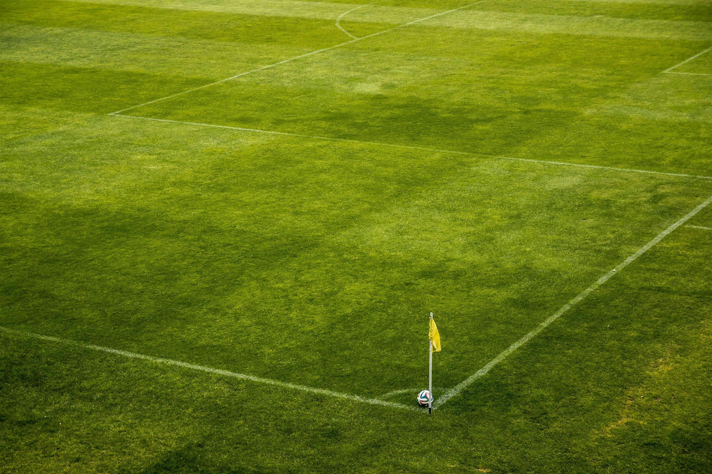
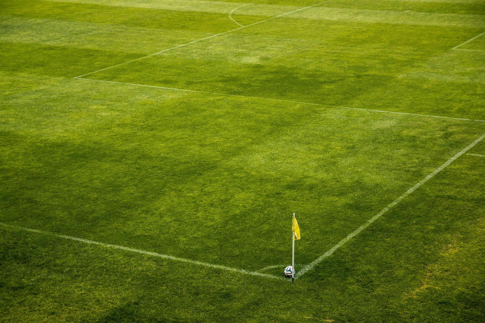

HistoryFootball
- Home
- Gallery
- About Us
Football, also known as soccer in some regions, is a globally beloved sport with a rich and diverse history. Originating from ancient civilizations and evolving through medieval Europe, football underwent a transformation in the 19th century with the establishment of standardized rules by the Football Association (FA) in England. The game's popularity soared, spreading across continents through the British Empire's influence. The formation of FIFA in 1904 further propelled football onto the international stage, leading to the inception of the prestigious FIFA World Cup in 1930. Over the years, football has become a cultural phenomenon, captivating the hearts of millions worldwide. With major club competitions, national leagues, and the World Cup, football has grown into a unifying force, transcending borders and bringing people together through the shared passion for the beautiful game. The sport's enduring appeal lies in its simplicity, accessibility, and the unparalleled thrill of competition on both local and global scales.
The roots of football can be traced back to ancient civilizations. Games involving kicking a ball were played in various cultures, including the Greeks, Romans, and Chinese.
In medieval Europe, a variety of football-like games were played in different regions. These games often involved large numbers of players and lacked standardized rules.
In medieval England, "mob football" became popular. These were chaotic and violent games played between neighboring villages, with few rules and large numbers of participants. The objective was often to move a ball to a specific location, such as the opposing village's church.
During the 19th century, schools and universities began to codify the rules of football to create a more organized and standardized game. Various schools had their own sets of rules, leading to differences in the way the game was played.
The need for standardized rules became evident as different teams with varying rules faced each other. In 1863, the newly formed Football Association (FA) in England established a unified set of rules known as the Laws of the Game. These rules included elements such as the use of a round ball, a defined field, and the prohibition of using hands except by goalkeepers.
As the British Empire expanded, football spread to other parts of the world. The game gained popularity in South America, Europe, and beyond.
In 1904, the Fédération Internationale de Football Association (FIFA) was founded in Paris, with the aim of overseeing international competitions and promoting the growth of the sport globally.
The first FIFA World Cup took place in Uruguay in 1930, marking the beginning of international football competitions. The World Cup has since become one of the most prestigious tournaments in the world, held every four years.
The transition to professional football occurred in the late 19th and early 20th centuries. The formation of professional leagues allowed players to be compensated for their participation.
Football continued to grow in popularity throughout the 20th century and into the 21st century. Major club competitions, such as the UEFA Champions League and domestic leagues worldwide, attract millions of fans. The sport has become a global phenomenon, with billions of people following and playing football.

 
